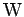
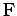

Eine Aussage ist die gedankliche Widerspiegelung eines Sachverhalts in Form eines Satzes einer natürlichen oder künstlichen Sprache. Jede Aussage ist entweder wahr oder falsch: Prinzip der Zweiwertigkeit (s. auch mehrwertige oder Fuzzy-Logik). Man nennt ,,wahr`` bzw. ,,falsch`` den Wahrheitswert der Aussage und bezeichnet ihn mit  (oder 1) bzw.  (oder 0). Die Wahrheitswerte werden auch als aussagenlogische Konstanten bezeichnet.